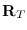
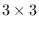

A matrix is a two-dimensional array whose elements are all floats.
In most functions a matrix can be of any size,
but the v*, v.*, Euler-angle and rpy-angle functions
can only handle three dimensional matrices.
Transform, m* and transpose do not restrict
the matrices to be square,
and they operate on general n*m size matrices.
Functions that can accept result parameter
places the computed result there, and no heap is wasted.
All matrix functions are intended for the transformation in the normal
coordinate systems, and not in the homogeneous coordinates.
The rpy-angle function decomposes a rotation matrix into three components
of rotation angles around z, y and x axes of the world coordinates.
The Euler-angle function is similar to rpy-angle but
decomposes into rotation angles around local z, y and again z axes.
Both of these functions return two solutions since angles can be
taken in the opposite directions.
; Mat is a 3X3 rotation matrix.
(setq rots (rpy-angle mat))
(setq r (unit-matrix 3))
(rotate-matrix r (car rots) :x t r)
(rotate-matrix r (cadr rots) :y t r)
(rotate-matrix r (caddr rots) :z t r)
;--> resulted r is equivalent to mat
To keep track of pairs of a position and a orientation in 3D space, use
the coordinates and cascaded-coords classes
detailed in the section 15.4.
matrix &rest elements [function]
-
-
makes a new matrix from elements.
Row x Col = (number of elements) x (length of the 1st element).
Each of elements can be of any type of sequence.
Each sequence is lined up as a row vector in the matrix.
make-matrix rowsize columnsize &optional init [function]
-
-
makes a matrix of
.
matrixp obj [function]
-
-
T if obj is a matrix, i.e. obj is a two dimensional array
and its elements are floats.
matrix-row mat row-index [function]
-
-
extracts a row vector out of matrix mat.
matrix-row is also used to set a vector in a particular row
of a matrix using in conjunction with setf.
matrix-column mat column-index [function]
-
-
extracts a column vector out of mat.
matrix-column is also used to set a vector in a particular
column of a matrix using in conjunction with setf.
m* matrix1 matrix2 &optional result [function]
-
-
concatenates matrix1 and matrix2.
transpose matrix &optional result [function]
-
-
transposes matrix, i.e. columns of matrix are exchanged with
rows.
unit-matrix dim [function]
-
-
makes an identity matrix of dim  dim.
replace-matrix dest src [function]
-
-
replaces all the elements of dest matrix with ones of src matrix.
scale-matrix scalar mat [function]
-
-
multiplies scaler to all the elements of mat.
copy-matrix matrix [function]
-
-
makes a copy of matrix.
transform matrix fltvector &optional result [function]
-
-
multiplies matrix to fltvector from the left.
transform fltvector matrix &optional result [function]
-
-
multiplies matrix to fltvector from the right.
rotate-matrix matrix theta axis &optional world-p result [function]
-
-
multiplies a rotation matrix from the left (when world-p is non-nil)
or from the right (when world-p is nil).
When a matrix is rotated by rotate-matrix,
the rotation axis :x, :y, :z or 0,1,2
may be taken either in the world coordinates or in the local coordinates.
If world-p is specified nil, it means rotation along the
axis in the local coordinate system and the rotation matrix is multiplied
from the right.
Else if worldp is non-nil, the rotation is made in the
world coordinates and the rotation matrix is multiplied from the left.
If NIL is given to axis, matrix should be two dimensional and
the rotation is taken in 2D space where world-p does not make sense.
rotation-matrix theta axis &optional result [function]
-
-
makes a 2D or 3D rotation matrix around axis which can be any of
:x, :y, :z, 0, 1, 2, a 3D float-vector or NIL.
When you make a 2D rotation matrix, axis should be NIL.
rotation-angle rotation-matrix [function]
-
-
extracts a equivalent rotation axis and angle from rotation-matrix
and a list of float and float-vector is returned.
NIL is returned when rotation-matrix is a unit-matrix.
Also if the rotation angle is too small, the result may have errors.
When rotation-matrix is 2D, the single angle value is returned.
rpy-matrix ang-z ang-y ang-x [function]
-
-
makes a rotation matrix defined by roll-pitch-yaw angles.
First, a unit-matrix is rotated by ang-x radian along X-axis.
Next, ang-y around Y-axis and finally ang-z around Z-axis.
All the rotation axes are taken in the world coordinates.
rpy-angle matrix [function]
-
-
extracts two triplets of roll-pitch-yaw angles of matrix.
Euler-matrix ang-z ang-y ang2-z [function]
-
-
makes a rotation matrix defined by three Euler angles.
First, a unit-matrix is rotated ang-z around Z-axis, next, ang-y
around Y-axis and finally ang2-z again around Z-axis.
All the rotation axes are taken in the local coordinates.
Euler-angle matrix [function]
-
-
extracts two tuples of Euler angles.
2016-03-23